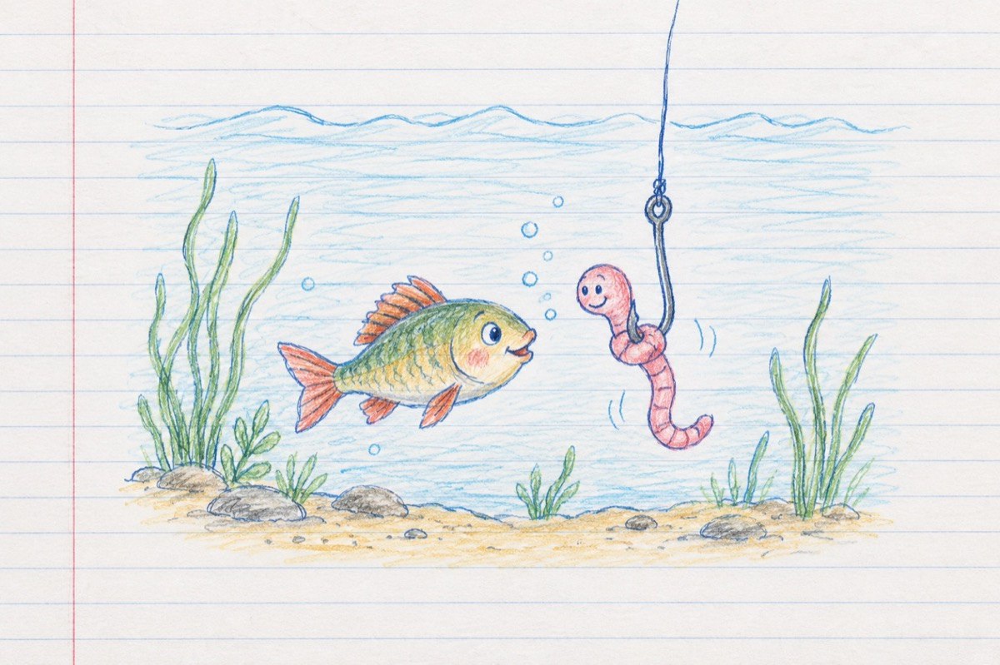

Râma și peștele
- De ce ești la noi în lac
Ai venit în vizită?
În loc să înoți pe colac
Te dai huța-n undiță?!..
- Ei aș, sunt puțin grăbită
Și mă cam doare în piept
Vreau acasă, sunt răcită
Nu vrei să-mi ții de urât?
Și-amândoi se iau de mână
Bine-nfipți într-un cârlig
Dorind prieteni să rămână
Numai că afară-i frig!...
Râma intră iar în lac
Și se plimbă în cârlig
Peștele fript la proțap
Nu mai tremură de frig!..
Răul numai rău aduce
Râma moare pe cârlig
Peștele pe jar se frige
Iar pescaru-i în câștig!
Vasile Groza